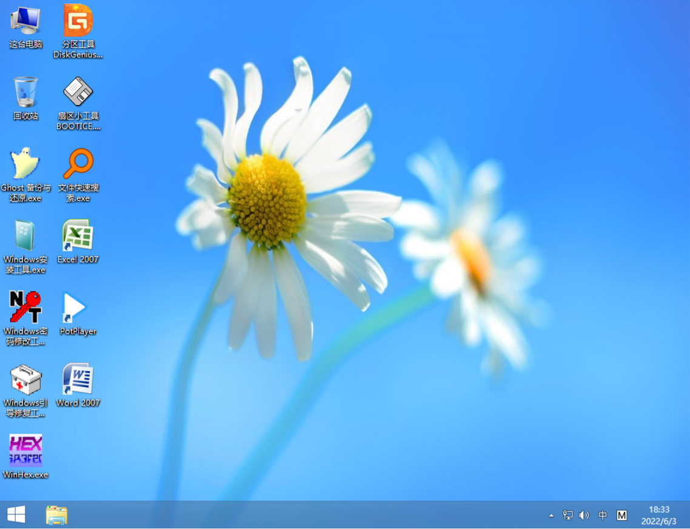

The RE version is available for low-spec windows 8.1 kernels, and only supports Laugcy boot mode, but supports LogonUI.
The version of the file name without RE is the Windows 10 kernel, which does not support LogonUI and networking, but supports both boot modes of UEFI+Laugcy.
Preview

ToBePE RE version
ToBePE normal version
The normal version is 924MB in size, the RE version is 826MB, and the downloaded format is ISO
Hardware requirements
If you want to load faster, you need at least 2GB or more of memory. When running the normal version, it is best to have more CPU than a single core, otherwise it will be very stuttering. (The RE version can be loaded smoothly under a single-core CPU)
If you are using WiFi, such as a laptop user, the network will not load properly!